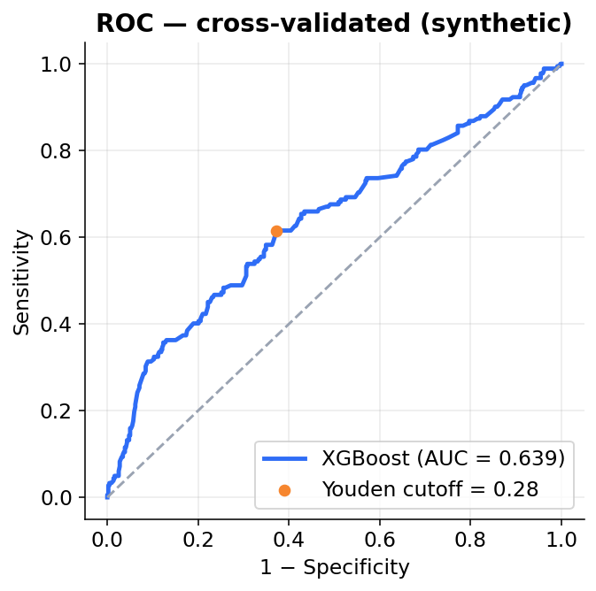
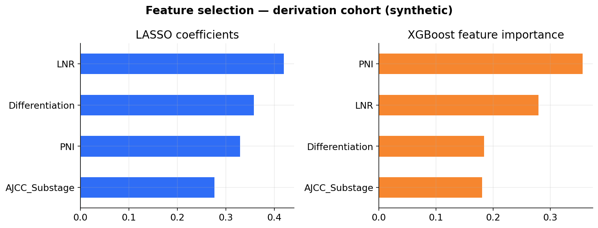
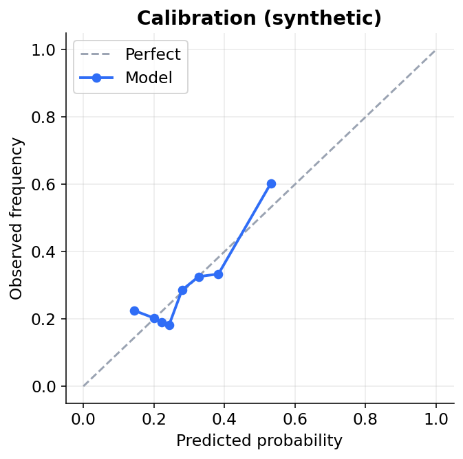
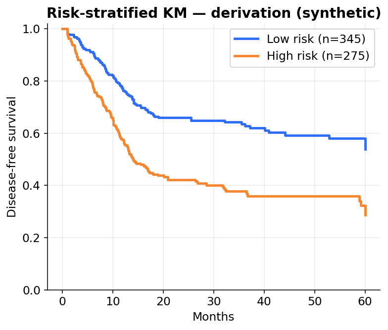
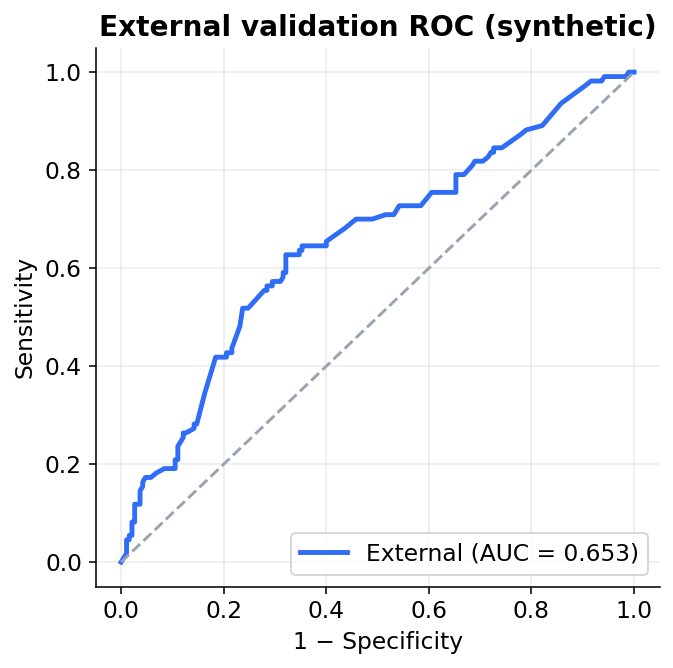
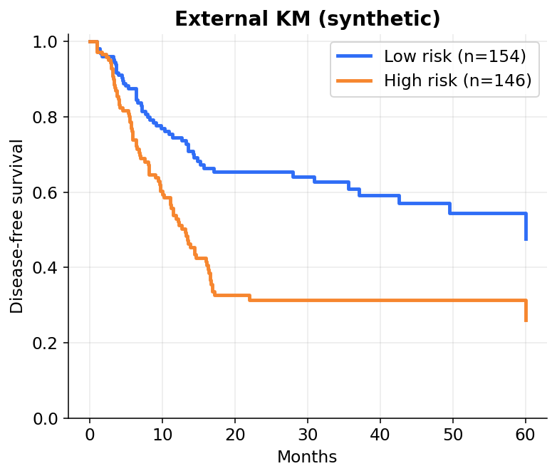

.ipynb），讓你能逐格重現與修改。Reviewer 要求修改？
只要改 Notebook 裡那一格 Script、重跑，
就能得到一致、可重現的結果。
連「圖表」都用 Notebook 產生。
之後要改文字、調細節，
重現與修改都變得很容易。
# ROC 曲線 ax.plot(fpr, tpr, color='#2f6df6', lw=2.5, label=f'AUC = {auc:.3f}') ax.set_title('ROC — cross-validated') fig.savefig('../Figures/fig2_roc.png')






AI 很適合協助「分析與寫程式」，
但引用文獻時可能編造看似真實、實則不存在的參考資料。
在沒有高階 harness（評估框架）支援下，目前的 AI 並非 100% 可靠。
每一篇 reference，都要親自查證。